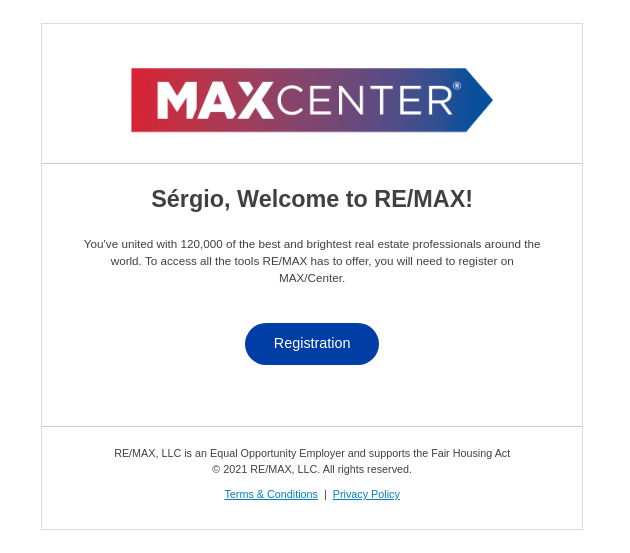
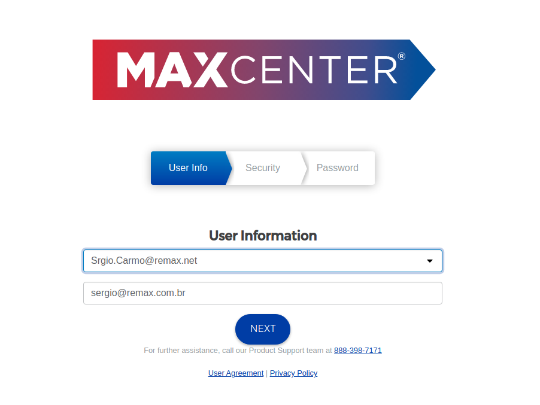
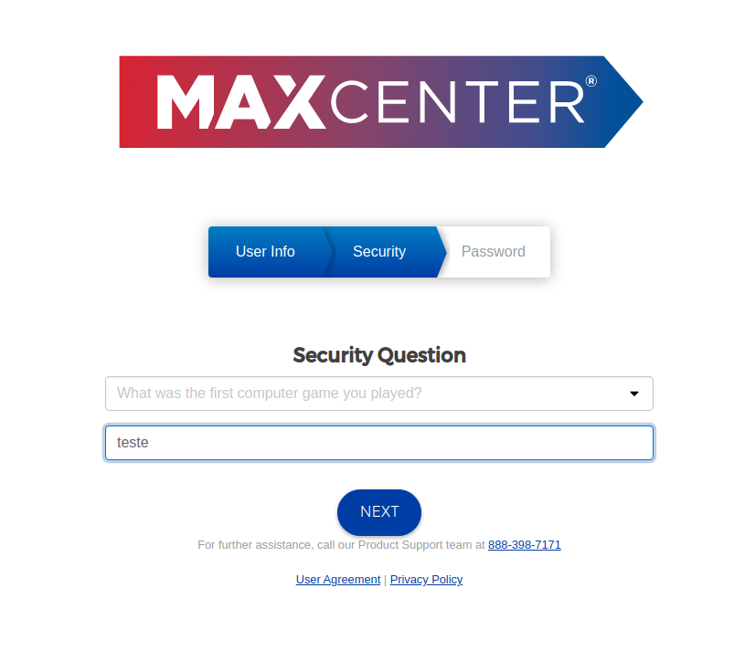
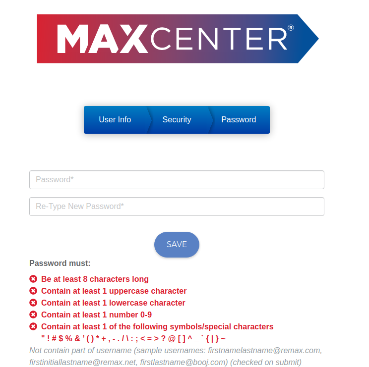

Acesso ao Max Center Global
Para acessar o Max Center Global, é preciso que o usuário possua um e-mail com sufixo @remax.net. Caso o usuário que deseja acessar o Max Center Global não o possua, o processo de criação pode ser realizado em duas etapas:
- Através de um chamado no Movidesk, nossa plataforma de suporte, o Broker deverá solicitar a criação de um usuário na base de dados da RE/MAX Global. Apenas Corretores Associados com CRECI poderão ser cadastrados.
- Após a criação do usuário, realizada por um analista da Equipe de Suporte, o usuário em questão receberá uma mensagem de boas vindas da RE/MAX Global em seu e-mail @remax.com.br, com o título “Welcome to RE/MAX!”. É necessário abrir a mensagem, clicar no botão "Registration" e seguir o passo a passo proposto pela plataforma. 
- Em seguida, escolha uma das opções oferecidas pela RE/MAX Global para o e-mail @remax.net. Serão sempre oferecidas apenas três opções. Atenção: nunca altere seu e-mail @remax.com.br nesta tela. 
- Como forma de segurança, o Max Center Global solicita que o usuário escolha uma Security Question, uma pergunta de segurança que só você saberá a resposta. Esta pergunta será utilizada caso o usuário perca a senha e precise recuperar. Escolha sua Security Question e registre a resposta. 
- Para finalizar, defina uma senha segura e salve o cadastro ao clicar em “Save” 
Agora o usuário já tem acesso ao Max Center Global e seu e-mail @remax.net já está criado.
Para acessar o Max Center Global, o usuário deve acessar o link https://www.remax.com.br/ e fazer seu login com as credenciais criadas nos passos anteriores.
Esse artigo foi útil?